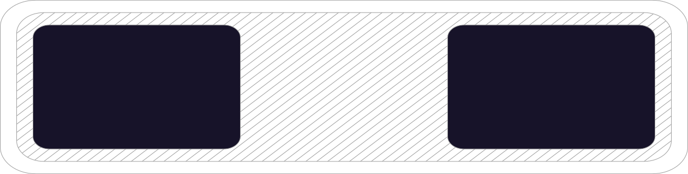
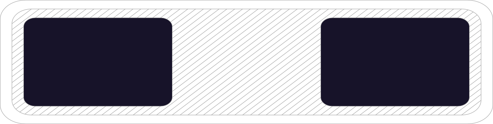

How do batteries work?
There are four main components to batteries; an anode, cathode, liquid electrolyte and a separator.
The negative anode releases electrons during an electrochemical reaction while the positive cathode acquires them. The separator's function is to prevent physical contact between the anode and cathode while allowing the ions to pass through. The liquid electrolyte acts as a highway allowing the ions to move back and forth.
Charging: The electrolyte transfers the ions from the cathode to the anode.
Powering: The ions flow back to the cathode through the electrolyte to produce power.
 
Cathode
Anode
Separator
Electrolyte

Cathode
Anode
Separator
Electrolyte
Charging up: a historic journey
The history of the electrochemical cell reads as an exciting tale of innovation and discovery. Here are some key milestones in the scientific journey that lifted us out of the age of clockwork and steam power and propelled us into the realm of in-your-pocket, portable power.
Powering down: the limitations of modern batteries
Thanks to their amazing power output and convenient portability, Lithium-ion batteries have revolutionised the way that we live, work and travel. Weight-for-weight, Li-ion batteries can store 6x the amount of energy[1] than their lead-acid rivals, making them the clear choice in our constant search for electric power on the move, but what are their limitations?


Energy Density
Despite boasting the highest energy density of all modern batteries, range anxiety is still a major limiting factor in the adoption of EVs powered by Li-ion. Depending on the model, drivers can expect 100-300 miles from a full charge[2].

Cost
Li-ion batteries are around 40% more expensive to manufacture than nickel-cadmium cells[3] and are cheaper to replace than reuse[4], meaning just 5% get recycled[6]. To add to the environmental cost, each tonne of lithium mined uses 2,273,000L of water[5].

Thermal Capacity
Li-ion batteries are sensitive to high temperatures and, despite having safety features built in, can catch fire if there are any faulty or compromised parts. This also makes recycling tricky, as they can explode if disassembled incorrectly.

Toxic Materials
Extracting raw materials is a costly process and takes huge quantities of energy and water. These materials are relatively scarce, only available in certain locations and are attached to numerous human rights and environmental concerns throughout the supply chain.